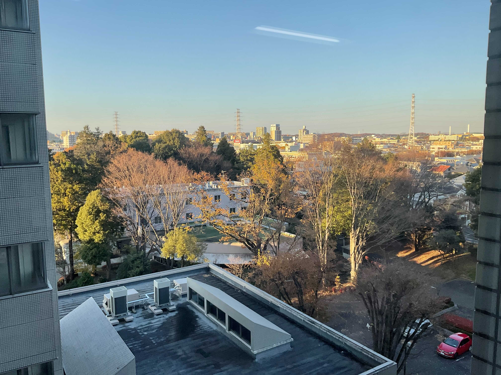
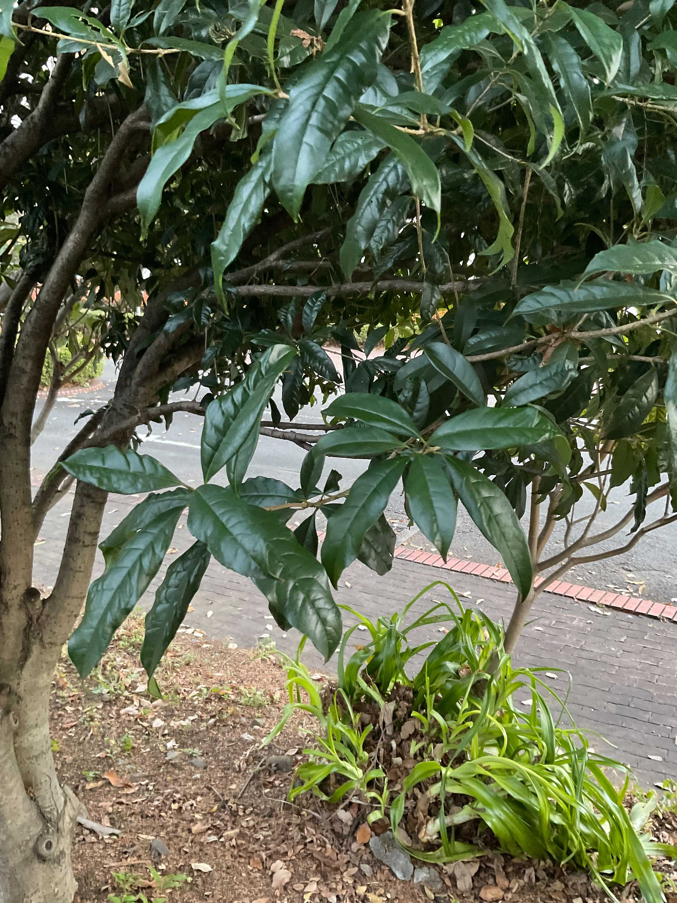
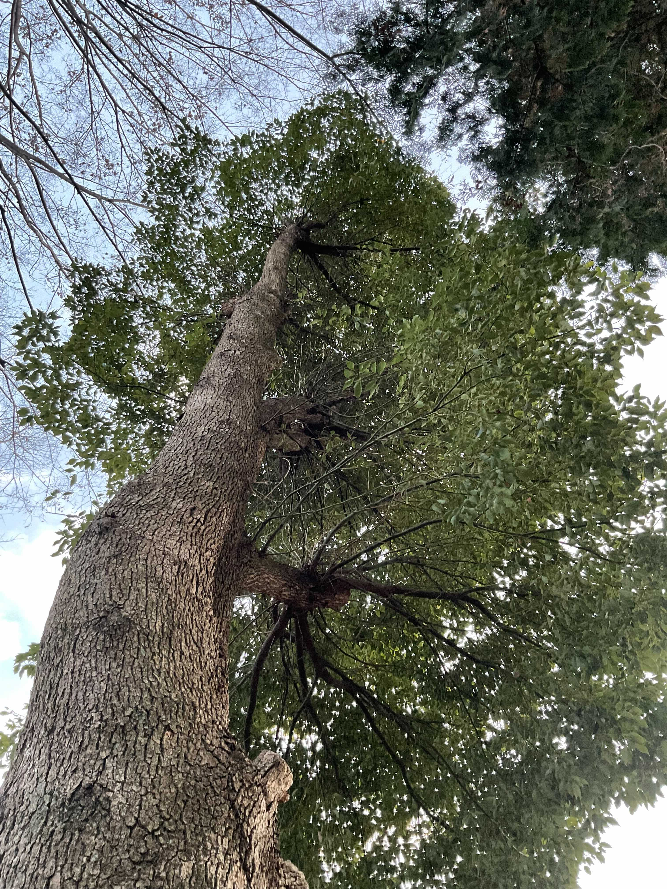
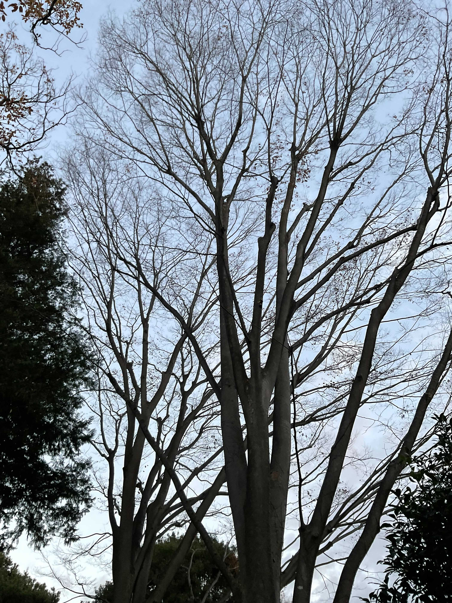
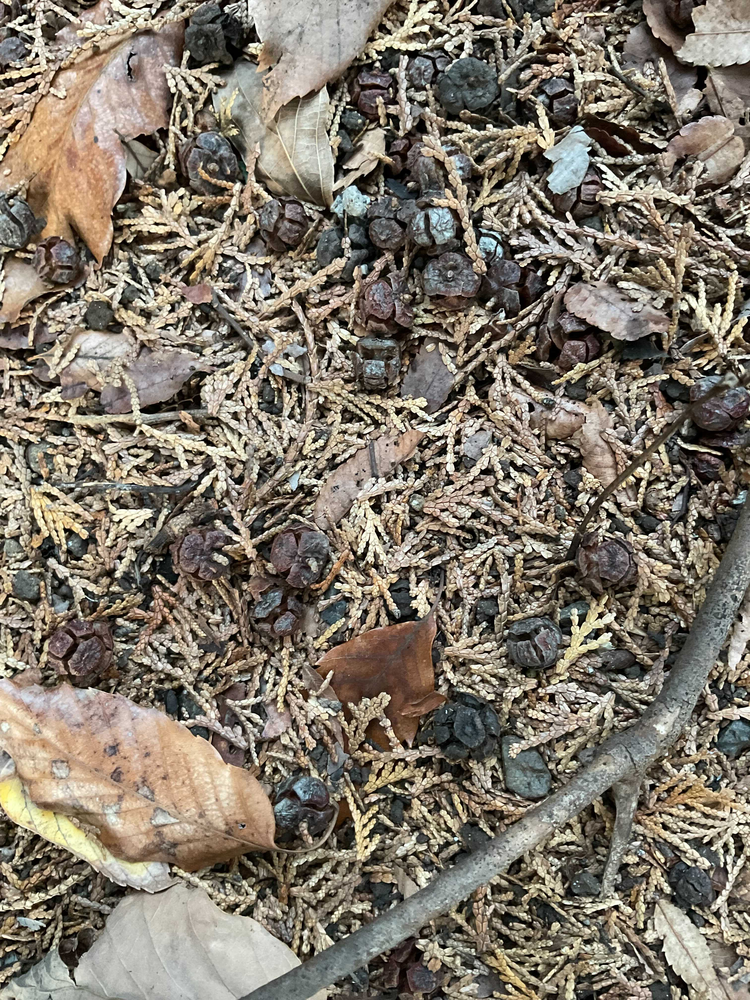

木々の名は。
～ 宇宙研生息の木について調べてみた ～
プロローグ（発端）
そういう気持ちに取りつかれたのは多分、あの日から
あの日、月が欠けた日。それはまるで
まるで秋の紅のように、ただひたすらに
美しい眺めだった
Adventカレンダーなるものを聞いたけど、何を書いていいかわからない,,,
Slackの宣伝投稿を見返すと、11月19日。もうかれこれ10日以上経ってしまっている。
これといった趣味もないしー、かといって研究の話をするのもなぁ...
やっぱ来世は東京のイケメン高校生にしてもらうしかない
最近は空が高い。雲一つない青空も "黄昏れる" 相手として悪くない、と私は思う。
高階の特権を十分に生かせる今の席は、なかなかのお気に入りだ。
おもむろに視線を下に移すと、風にあおられた木々たちから、枯れ葉が舞い上がるところだった。
ほんの少し前までは、（そう、ちょうどあの日くらいまでは、）窓外の景色の主役だった葉っぱたち。モミジやイチョウのような華形ではなくとも、十本十色に色づいた葉が織りなすハーモニーは、見ているだけで呼吸が深くなる。
ふと、この木々のことをもっと知ってみたいという衝動にかられた。
名前なんてどうせ忘れてしまうだろうと思いつつ、Googleカレンダーを開こうとしていた私であった。

調査
縒り集まってかたちを作り、捻じれて、絡まって、時には戻って、また繋がり,,,
それが植生、それが時間
対象としたのは食堂まわりに生えている樹木。
とりあえず、カメラとメモと巻き尺をもって突撃することにした。
結論、あんまり判別できなかった。
冬という季節は、素人向きでないことがはっきりわかった。
それでも、いくつかの樹木に対しては候補をたてられたので紹介したい。
（あくまで私の推測なので、間違っている可能性大です笑）
- 属名
- モクセイ科モクセイ属
- 判別理由
- 低めの樹高
- 常緑
- 葉っぱの形（細長い卵型。光沢あり）

- 属名
- クスノキ科クスノキ属
- 判別理由
- 樹高
- ごつごつした樹皮、かつはがれにくい
- 葉っぱの形（卵型。）

- 属名
- ブナ科ブナ属
- 判別理由
- 樹高
- 比較的なめらかな樹皮
- 葉っぱの形（the 葉っぱ）

- 属名
- ヒノキ科クロベ属
- 判別理由
- 樹高
- 枯れたつぼみ
- 落ち葉の形
- メモ
- あまり日当たりが良くないので、出回っている写真のように青々としていないという予想

- 属名
- ヤナギ科ヤナギ属
- 判別理由
- つぼみの形
- メモ
- いい写真がとれませんでした,,,
参考：樹木検索君（http://www.tree-watching.info/kensaku/1t/kensakuA0.html）
エピローグ（感想）
一通り調査を終える頃には、すっかり日が傾いていた。これが噂の片割れ時か。
まじめな植物図鑑を作ってやろうという目論見は大きくはずれた。
風が落ち葉を吹き飛ばす音は、カーテンが閉まる音によく似ている。
もっとあったかい時期にやろう。
自分の思い上がりと根気のなさ等々から逃げるように帰った晩、月は見えなかった。
まとめ方の方針が全く見えずなかなか眠れなかった夜、夢は見れなかった。
END
（この物語はフィクションです）
============================